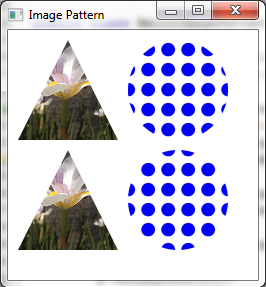

public final class ImagePattern extends Paint
The ImagePattern class fills a shape with an image pattern. The
user may specify the anchor rectangle, which defines the position,
width, and height of the image relative to the upper left corner of the
shape. If the shape extends out of the anchor rectangle, the image is tiled.
If the proportional variable is set to true (the default)
then the anchor rectangle should be specified relative to the unit
square (0.0->1.0) and will be stretched across the shape.
If the proportional variable is set to false, then the anchor
rectangle should be specified in the local coordinate system of the shape
and the image will be stretched to fit the anchor rectangle. The anchor
rectangle will not be stretched across the shape.
The example below demonstrates the use of the proportional
variable. The shapes on the top row use proportional coordinates
(the default) to specify the anchor rectangle. The shapes on the
bottom row use absolute coordinates. The flower image is stretched
to fill the entire triangle shape, while the dot pattern image is tiled
within the circle shape.
import javafx.scene.Scene;
import javafx.scene.image.Image;
import javafx.scene.paint.ImagePattern;
import javafx.scene.shape.Circle;
import javafx.scene.shape.Polygon;
import javafx.stage.Stage;
public class HelloImagePattern extends Application {
private static final String flowerURL = "file:flower.png";
private static final String dotsURL = "file:dots.png";
@Override public void start(Stage stage) {
stage.setTitle("Image Pattern");
Group root = new Group();
Scene scene = new Scene(root, 600, 450);
Image dots = new Image(dotsURL);
Image flower = new Image(flowerURL);
Polygon p = new Polygon();
p.setLayoutX(10);
p.setLayoutY(10);
p.getPoints().add(50.0);
p.getPoints().add(0.0);
p.getPoints().add(100.0);
p.getPoints().add(100.0);
p.getPoints().add(0.0);
p.getPoints().add(100.0);
p.setFill(new ImagePattern(flower, 0, 0, 1, 1, true));
root.getChildren().add(p);
Polygon p2 = new Polygon();
p2.setLayoutX(10);
p2.setLayoutY(120);
p2.getPoints().add(50.0);
p2.getPoints().add(0.0);
p2.getPoints().add(100.0);
p2.getPoints().add(100.0);
p2.getPoints().add(0.0);
p2.getPoints().add(100.0);
p2.setFill(new ImagePattern(flower, 0, 0, 100, 100, false));
root.getChildren().add(p2);
Circle circ = new Circle(50);
circ.setTranslateX(120);
circ.setTranslateY(10);
circ.setCenterX(50);
circ.setCenterY(50);
circ.setFill(new ImagePattern(dots, 0.2, 0.2, 0.4, 0.4, true));
root.getChildren().add(circ);
Circle circ2 = new Circle(50);
circ2.setTranslateX(120);
circ2.setTranslateY(10);
circ2.setCenterX(50);
circ2.setCenterY(50);
circ2.setFill(new ImagePattern(dots, 20, 20, 40, 40, false));
root.getChildren().add(circ2);
stage.setScene(scene);
stage.show();
}
The code above produces the following:

| Constructor and Description |
|---|
ImagePattern(Image image)
Creates a new instance of ImagePattern from the specified image.
|
ImagePattern(Image image,
double x,
double y,
double width,
double height,
boolean proportional)
Creates a new instance of ImagePattern.
|
| Modifier and Type | Method and Description |
|---|---|
double |
getHeight()
Gets the height of the anchor rectangle.
|
Image |
getImage()
Gets the image to be used as a paint.
|
double |
getWidth()
Gets the width of the anchor rectangle.
|
double |
getX()
Gets the x origin of the anchor rectangle.
|
double |
getY()
Gets the y origin of the anchor rectangle.
|
boolean |
isProportional()
Gets a boolean that indicates whether start and end locations are
proportional or absolute.
|
public ImagePattern(Image image)
image - the image to be used as the paint.java.lang.NullPointerException - if the image is null.java.lang.IllegalArgumentException - if image is not done loading,
that is if progress is < 1.public ImagePattern(Image image, double x, double y, double width, double height, boolean proportional)
image - the image to be used as the paint.x - the x origin of the anchor rectangle.y - the y origin of the anchor rectangle.width - the width of the anchor rectangle.height - the height of the anchor rectangle.proportional - whether the coordinates are proportional
to the shape which ImagePattern fillsjava.lang.NullPointerException - if the image is null.java.lang.IllegalArgumentException - if image is not done loading,
that is if progress is < 1.public final Image getImage()
public final double getX()
public final double getY()
public final double getWidth()
public final double getHeight()
public final boolean isProportional()
[0..1] are scaled to map onto the bounds of the shape that the
pattern fills. If this flag is false, then the coordinates are specified
in the local coordinate system of the node.Copyright (c) 2008, 2014, Oracle and/or its affiliates. All rights reserved.